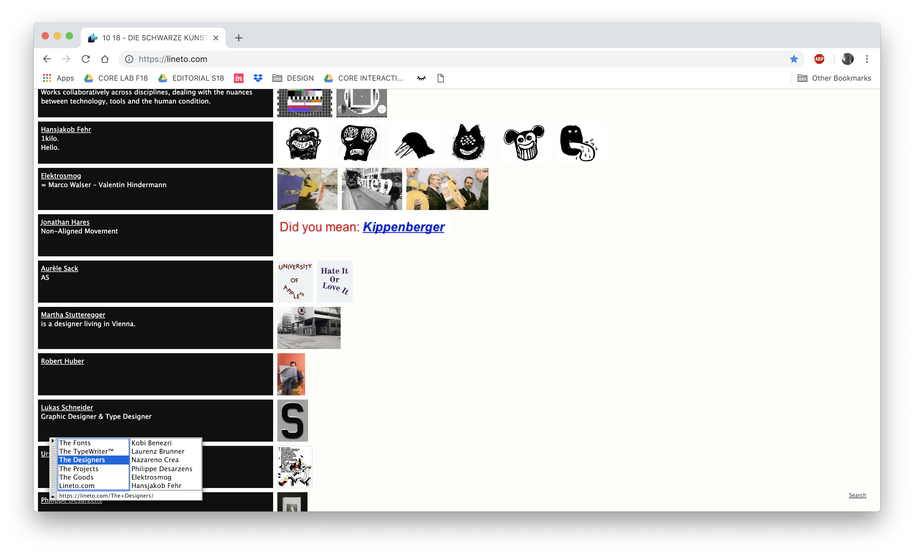
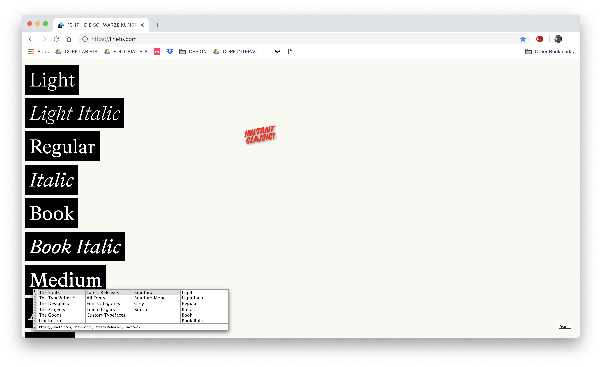
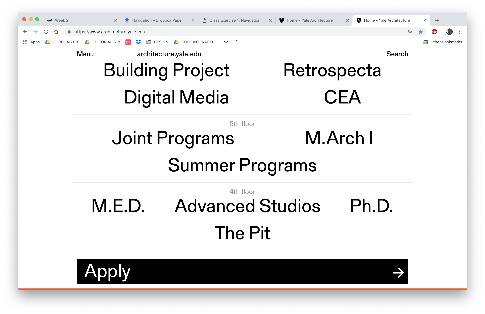
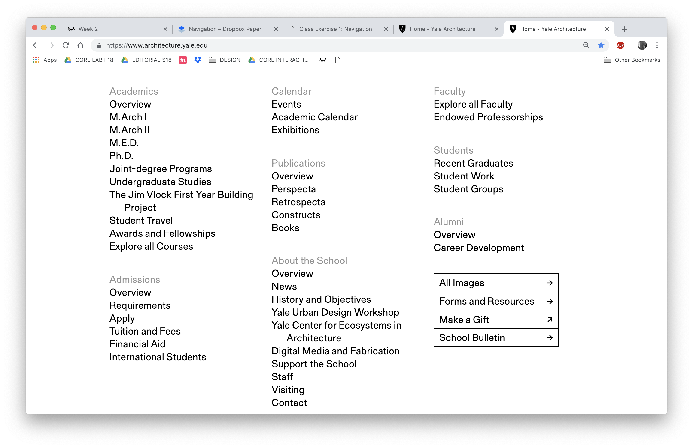
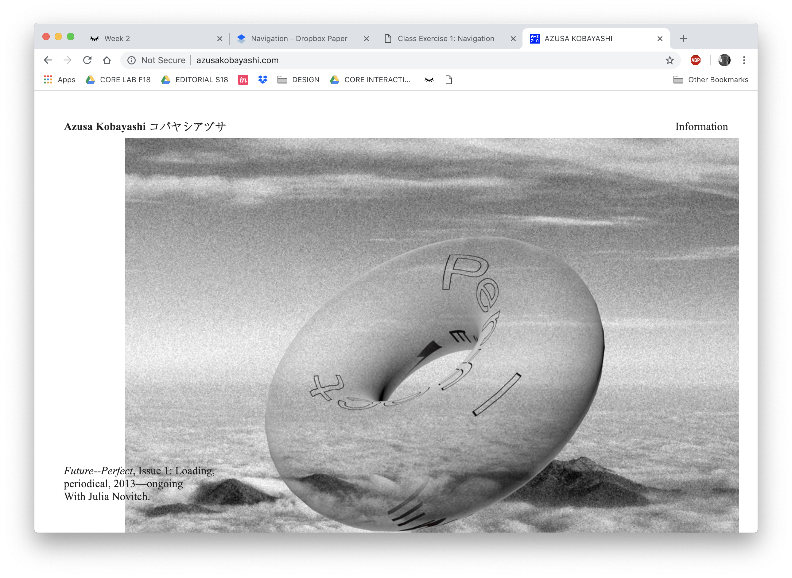
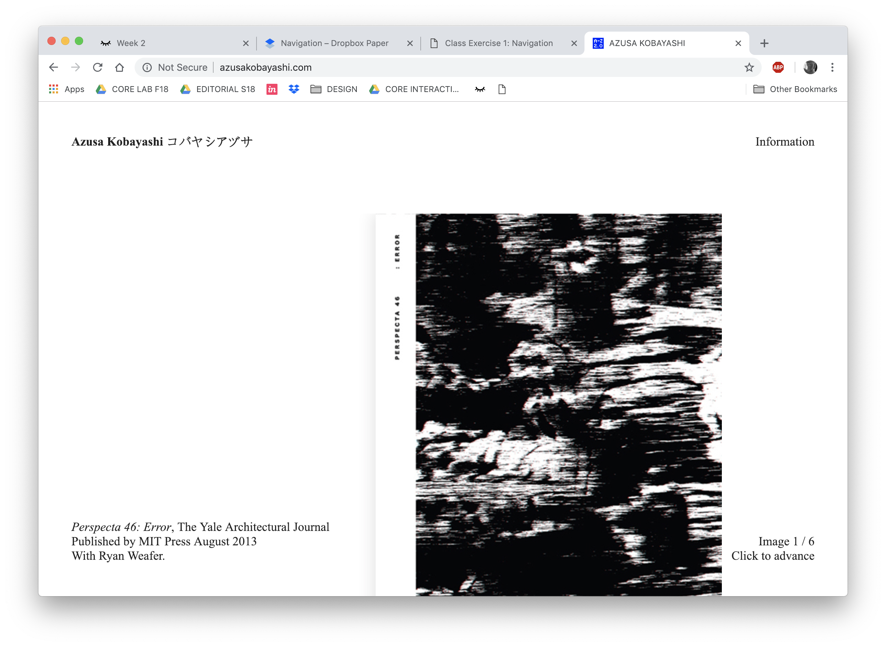

CORE INTERACTION
Lineto


- This website is used to display typeface designs by the Lineto type foundry
- This website contains designer portfolios, an interactive tool to display typefaces
- This website rocks because it is modular, fun yet, maintains a system
Yale School of Architecture


- This website is a website for Yale School of Architecture
- This website rocks because thee typeface is simple and the layout is exciting, there are many contrasts and the black and white typography is an anchor for the diverse images and content
- The bottom of the page is most interesting to me, it is purely typography and there are quirks when the cursor is dragged over text or clicked on
Azusa Kobayashi


- This website is a portfolio
- This website rocks because the user has the ability to see works in no specific direction, this enhances the decisions made by the designer in layout and represents a whole body of work
- The navigation is entirely up to the user and due to the amount of space on the page, the user can make decisions on what work to look at